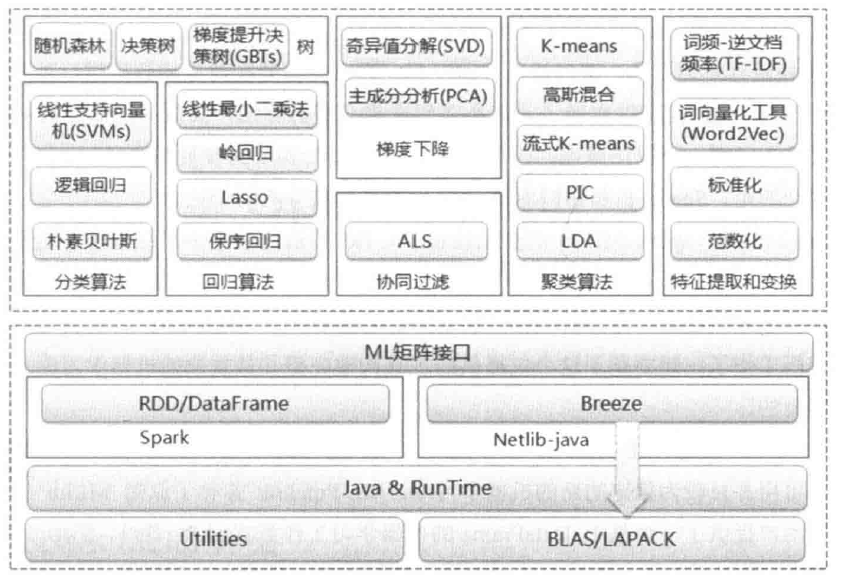

Spark MLlib介绍
MLlib是Spark机器学习库，它的目标是让机器学习更加容易和可伸缩星。MLlib是MLBase的一部分，其中MLBase分为4个部分，分别是MLlib、MLI，ML Optimizer和MLRuntime。
- ML Optimizer会选择它认为最适合的已经在内部实现好了的机器学习算法和相关参数，来处理用户输入的数据，并返回模型或其他的帮助分析的结果。
- MLI 是一个进行特征抽取和高级ML编程抽象的算法实现的API或平台
- MLlib是Spark实现一些常见的机器学习算法和使用程序。
- MLRuntime基于Spark计算框架，将Spark的分布式计算应用到机器学习领域。
MLlib提供了常用机器学习算法的实现，包括分类、回归，聚集、系统过滤和降维等。使用MLlib来做机器学习。
MLlib主要包含两部分。
- 底层基础：主要包括Spark的运行库、矩阵库和想良苦，其中向量接口和矩阵接口基于Netlib和BLAS/LAPACK开发的先写袋鼠库Breeze。MLlib支持本地的密集向量和稀疏向量，并且支持标量向量；它同时支持本地矩阵和分布式矩阵，支持的分布式矩阵分为RowMatrix、IndexedRowMatrix和CoordinateMatrix等。
- 算法库：包含分类、回归、聚集、协同过滤、梯度下降和特征提取和变换的呢该算法。

Spark MLlib数据类型
本地变量
本地向量是由整型索引和双精度浮点型数值组成的数据结构，本地向量的使用方便了MLlib对数据的描述和操作。其中本地向量分为密集向量和稀疏向量两种类型，密集向量通过一个浮点数组来表示，而稀疏向量通过索引和值两个并列的数据来表示，比如，向量（1.0，0.0，3.0）可以以密集格式[1.0，0.0，3.0]或者稀疏格式（3，[0，2]，[1.0，3.0]）表示，后者第一个3表示向量长度，即列数。
标签点
标签点由一个本地向量（密集或稀疏）和一个类标签组成。其中使用双精度浮点型来存储一个类标签，在二元分类中标签或为0（负向）或为1（正向），而在多元分类中标签应该是从0开始的索引，如0，1，2……
本地矩阵
MLlib中的矩阵是向量型的RDD，分为本地矩阵和分布式矩阵两种。本地矩阵有整型行列索引数据和对应的双精度浮点型值数据组成并存储。MLlib支持密集矩阵，实体值以列优先的方式存储在一个双精度浮点数组中。本地矩阵提供了密集矩阵和稀疏矩阵两种实现方法。
分布式矩阵
分布式矩阵有长整型行列索引和双精度浮点型数据组成，分布式存储在一个或多个RDD中。MLlib实现了三类分布式矩阵存储格式，分别为行矩阵、行索引矩阵、三元组矩阵和分块矩阵四种。
- 行矩阵：行矩阵是一个面向行的分布式矩阵，通过一个RDD来代表所有的行，每一行就是一个本地向量。行矩阵直接通过RDD[Vector]来定义并可以用来统计平均数、方差、协同方差等。
- 行索引矩阵：行索引矩阵和行矩阵类似，但其行索引具有特定含义，本质上是一个含有索引信息的行数据集合，每一行有长整型索引和一个本地向量组成。行索引可从一个RDD[IndexedRow]实例创建，IndexedRow是（Long，Vector）的封装类，剔除行索引矩阵中的行索引信息就变成一个行矩阵。
- 三元组矩阵：三元组矩阵是一个分布式矩阵，其实体集合是一个RDD，每一个实体是一个（i:Long，j:Long，value：Double）三元组，其中i代表行索引，j代表列索引，value代表实体的值。三元组矩阵常用于稀疏星比较高的计算中，是由RDD[MatrixEntry]来构建的。MatrixEntry是一个Tuple类型的元素，其中包含行列和元素值。
- 分块矩阵：分块矩阵是支持矩阵分块RDD的分布式矩阵，其中矩阵分块有(（Int,Int),Matrix）元组所构成，（Int,Int）表示该分块矩阵所处福矩阵的索引位置，Matrix表示该索引位置上的子矩阵。分块矩阵支持矩阵的加法和乘法，并设有辅助函数验证用于检查分块矩阵是否设置正确。